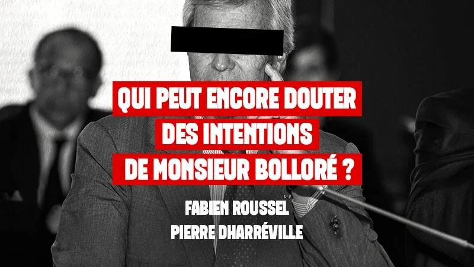

Déclaration nationale
Qui peut encore douter des intentions de Monsieur Bolloré ?
Date indiquée par Facebook · 20 avril 2026
Repères éditoriaux
Fabien Roussel et Pierre Dharréville dénoncent l’éviction d’Olivier Nora de la direction des éditions Grasset. Leur déclaration du 17 avril défend la liberté des autrices et des auteurs, l’indépendance de l’édition et le pluralisme des idées.
Texte conservé avec la publication
Qui peut encore douter des intentions de Monsieur Bolloré ?
La décision de Monsieur Bolloré d’écarter Olivier Nora de la direction des éditions Grasset a pour but de réorienter radicalement la politique éditoriale de cette institution emblématique dans le paysage éditorial français. Monsieur Bolloré ne supporte aucune résistance dans les entreprises qu’il s’approprie, au mépris des savoir-faire, de l’histoire, des collectifs humains qui les font vivre.
Cet acte d’autorité est un nouveau coup de semonce adressé à l’ensemble de son empire : il est prêt à détruire la réputation d’une maison, sa place, sa raison d'être. Ce que Vincent Bolloré a fait dans le monde des médias, il le poursuit avec la même brutalité dans le monde de l’édition. Il met sa puissance financière au service d’une vision politique profondément réactionnaire et de ses amis d’extrême droite. Il reconfigure l’espace de l’information et de la création pour reconfigurer les imaginaires.
En nombre, les auteurs et autrices de la maison Grasset ont manifesté plus que leur inquiétude, leur refus radical devant cette décision qui porte atteinte à leurs œuvres et à leurs projets : ils ne veulent pas être associés à l’entreprise de Monsieur Bolloré, ils ne veulent pas être sa propriété.
Nous leur apportons tout notre soutien. Nous appelons à prendre la mesure de la gravité de cette offensive et à voter des lois contre la concentration des moyens d’information, d’édition, de distribution ou de production culturelle, à prendre des dispositions pour protéger les institutions culturelles et médiatiques qui concourent à la santé démocratique de notre pays.
Nous appelons à déployer des politiques puissantes face à ces entreprises de dévoiement et de destruction. Monsieur Bolloré mène la bataille culturelle. Il veut promouvoir les auteurs qui lui conviennent, les commentateurs qui lui conviennent, pour façonner le peuple qui lui convient.
La République doit être au rendez-vous. Nous appelons à faire grandir le large front populaire pour la culture et la liberté qui a commencé à se constituer avec les Nouveaux Etats généraux de la culture.
Le 17 avril 2026,
Pierre Dharréville, responsable de la commission culture du PCF
Fabien Roussel, secrétaire national du PCF

Sources
Archive rouge · export Facebook · AR-0002-FB-00811
À lire aussi · « Urgence culture ! » La chronique de Philippe Rio